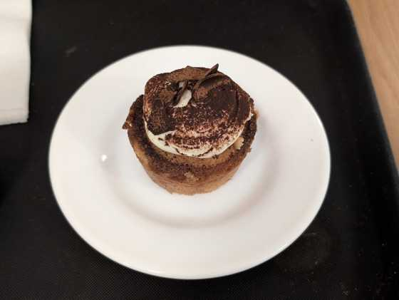
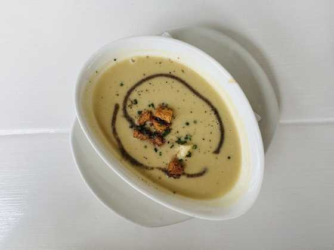
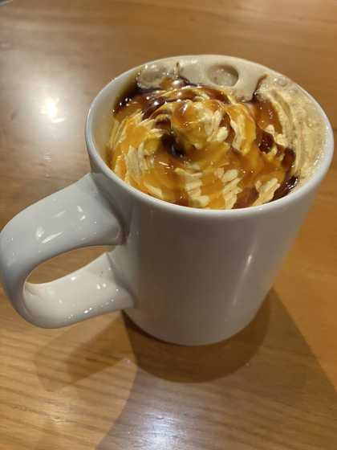
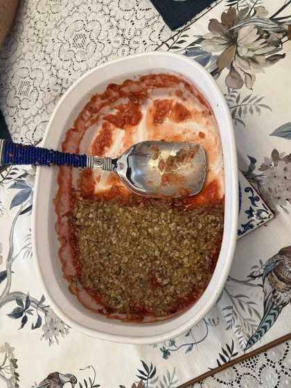
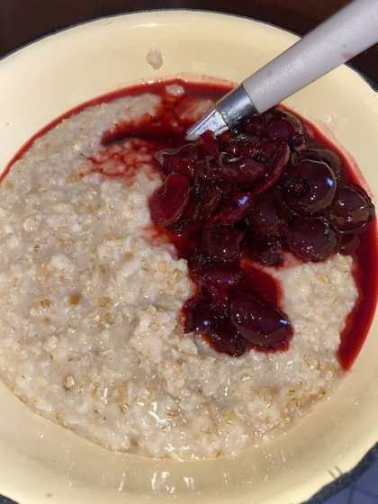

スイーツ
品目は準備中

京都府与謝野町・ちりめん街道
古い町家の土間を活かした、ゆったり過ごせるカフェ。CAFE 2Rinは、ちりめん街道のまちなみにひらかれた一軒です。
お店のこと
CAFE 2Rinは、京都府与謝野町・加悦の「ちりめん街道」にあるカフェです。Instagramのプロフィールによると、古い町家の土間を活かして、ゆったりとした雰囲気のお店を営んでいます。
プロフィールには、イタリア製のスクーターや気まぐれな猫の紹介もあり、肩の力の抜けた、のんびりした空気を感じさせます。ハイライトには「スイーツ」「予約ランチ」の項目があります。
情報源: Instagram @2rin_611
店名「2Rin」の意味や由来は確認できていないため、ここでは触れていません。見出しの言い回しは制作側の表現です。

メニュー
Instagramのハイライトで確認できたのは「スイーツ」「予約ランチ」の項目のみです。品目・価格・営業時間は準備中のため、写真はすべて雰囲気を伝えるイメージです。

品目は準備中

内容・ご予約方法は準備中

品目は準備中








| 営業時間 | 準備中 |
|---|---|
| 定休日 | 準備中 |
| 価格 | 準備中 |
口コミ
以下は制作側が作成したイメージ例で、実在のお客様の声ではありません。
イメージ例まちなみを歩いたあと、土間の席でひと休み。静かな時間が流れていました。
イメージ例甘いものとお茶で、ほっとひと息。気取らない雰囲気がうれしいです。
イメージ例ランチを予約して訪ねました。のんびりできて、また来たくなるお店です。
アクセス
| 所在地 | 〒629-2403 京都府与謝郡与謝野町加悦1048-2 |
|---|---|
| 電話 | 準備中 |
| 営業時間 | 準備中 |
| 定休日 | 準備中 |
| SNS | Instagram @2rin_611 |
最新の営業情報はInstagramをご覧ください。
写真はフリー素材のイメージで、店舗の実際の様子ではありません。実際の店内・商品写真は貴店ご提供のものに差し替えます。